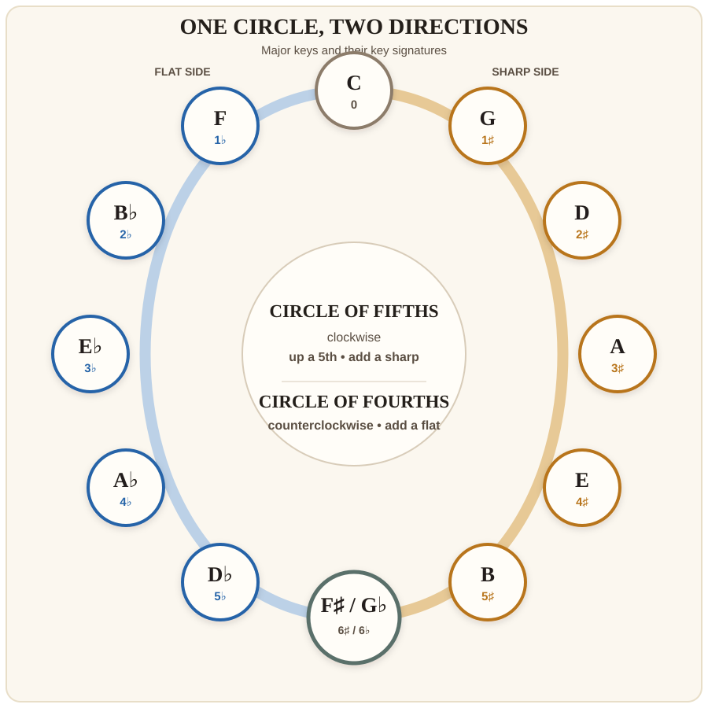

Level 2 · Chapter 36
Music Theory: Completing the Circle of Fifths
In Level 1, you built the sharp side of the Circle of Fifths one Major scale at a time. That map stopped at F♯ because the other side required a musical idea you had not yet used: flats.
Now B♭ has done real work. You heard it in D natural minor, understood it through the relative key of F Major, and played it on the fretboard. One flat is enough to open the other side of the circle.
Build the flat side by moving in 4ths
Start at C and move up a Perfect 4th. You arrive at F. F Major keeps the natural-note palette except for B♭, its fourth scale degree.
Now repeat the move. A Perfect 4th above F is B♭. B♭ Major keeps the existing B♭ and adds one new flat, E♭:
B♭ – C – D – E♭ – F – G – A – B♭
The new flat is again scale degree 4 of the new key. Continue the same process and the flat side grows:
| Major key | Number of flats | Key signature | New flat |
|---|---|---|---|
| C | 0 | None | — |
| F | 1 | B♭ | B♭ |
| B♭ | 2 | B♭, E♭ | E♭ |
| E♭ | 3 | B♭, E♭, A♭ | A♭ |
| A♭ | 4 | B♭, E♭, A♭, D♭ | D♭ |
| D♭ | 5 | B♭, E♭, A♭, D♭, G♭ | G♭ |
| G♭ | 6 | B♭, E♭, A♭, D♭, G♭, C♭ | C♭ |
The flat-side rule
Move the tonic up a Perfect 4th, retain every existing flat, and add one new flat. The new flat is scale degree 4 of the new Major key.
Construct B♭ and E♭ Major
These are the two new flat keys you should construct without a completed table.
- Write the seven letter names from B to B. Apply the 221-2221 Major Scale formula and use B♭ as the tonic. Which second flat is required?
- Write the seven letter names from E to E. Begin with the B♭ and E♭ already present in B♭ Major. Which third flat makes the E♭ Major formula work?
A♭, D♭, and G♭ continue exactly the same logic. At this stage, construct them with the table as a guide. You are learning how the system works, not collecting five unrelated spellings.
The complete outer circle

The name Circle of Fifths describes the clockwise route from C: C–G–D–A–E–B–F♯. Read the same map counterclockwise from C and each move rises by a Perfect 4th: C–F–B♭–E♭–A♭–D♭–G♭.
That is why many guitar and bass teachers practise it as the Circle of Fourths. It is one circle, not two competing systems.
The order of flats reverses the order of sharps
Level 1 gave you this order of sharps:
F♯ – C♯ – G♯ – D♯ – A♯ – E♯
Read those letter names backward and change the symbols to flats:
B♭ – E♭ – A♭ – D♭ – G♭ – C♭
Again, keep the two chains separate. The flat key names are C–F–B♭–E♭–A♭–D♭–G♭. The order of flats inside their key signatures begins B♭–E♭–A♭.
Why F♯ and G♭ share the bottom
F♯ and G♭ are two names for the same fretboard location. Their Major scales also use the same sounding pitches, spelled for two different sides of the circle:
| F♯ Major | F♯ | G♯ | A♯ | B | C♯ | D♯ | E♯ | F♯ |
| G♭ Major | G♭ | A♭ | B♭ | C♭ | D♭ | E♭ | F | G♭ |
Notice C♭ in G♭ Major. It sounds like B, but writing B would use the letter B twice and omit C. Correct scale spelling still requires one of every letter name.
What you need under your fingers
You do not need five new open-position scale fingerings. Your movable Major-scale pattern and movable chord shapes already let you carry the same interval system to new roots.
- Core mastery: spell and recognize F, B♭, and E♭ Major.
- Guided construction: build A♭, D♭, and G♭ by following the fourths rule.
- Fretboard application: locate the roots C–F–B♭–E♭ on the E and A strings. Say each name before you play it.
The full circle is a map. Fluency grows by using small sections of the map repeatedly, not by forcing all twelve keys into one practice session.
Try it yourself
- Spell B♭ Major and E♭ Major without looking at the table.
- Which Major key has four flats? Name all four.
- Which Major key contains C♭, and why is it not written as B?
- Start on C and move through four ascending Perfect 4ths. Which key do you reach, and how many flats does it have?
- Start on G♭ and move through three ascending Perfect 5ths. Which key do you reach?
- Name the seven enharmonic pairs that connect F♯ Major to G♭ Major.
Circle checkpoint
- Draw the outer circle from memory. Put C at the top and F♯/G♭ at the bottom. Fill in all remaining Major keys and their accidental counts.
- Write the six-sharp order and the six-flat order.
- Explain aloud: “Clockwise fifths add sharps; counterclockwise fourths add flats.”
- Spell F♯ Major and G♭ Major, then connect every pair of notes that sounds at the same fret.
One layer at a time. Some circle diagrams place relative minor keys on an inner ring. You now understand relative keys, but this chapter is completing the Major-key map. The full minor-key ring belongs to a later layer, after more minor scales have been constructed and heard.
Answer key
- B♭ Major: B♭, C, D, E♭, F, G, A, B♭. E♭ Major: E♭, F, G, A♭, B♭, C, D, E♭.
- Four flats: A♭ Major; B♭, E♭, A♭, D♭.
- C♭: G♭ Major. It preserves one of every letter name; B is already represented by B♭.
- Four 4ths: C–F–B♭–E♭–A♭. A♭ Major has four flats.
- Three 5ths: G♭–D♭–A♭–E♭. You reach E♭ Major.
- Enharmonic pairs: F♯/G♭, G♯/A♭, A♯/B♭, B/C♭, C♯/D♭, D♯/E♭, and E♯/F.